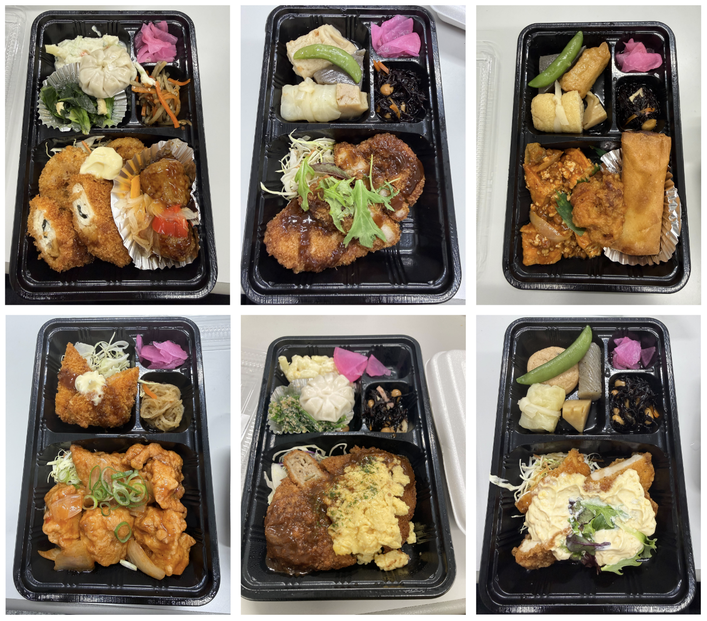
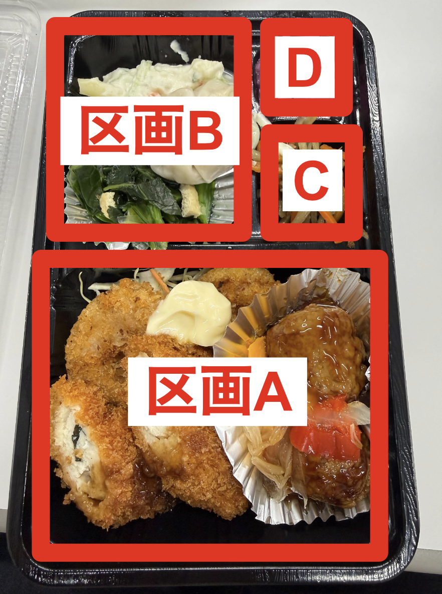
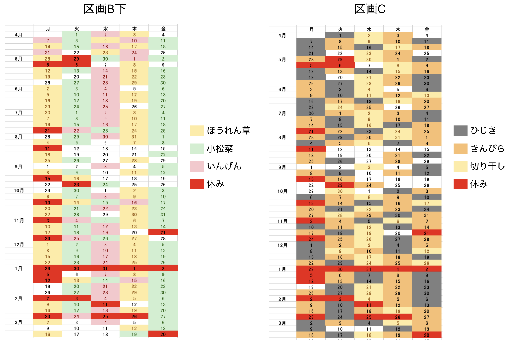
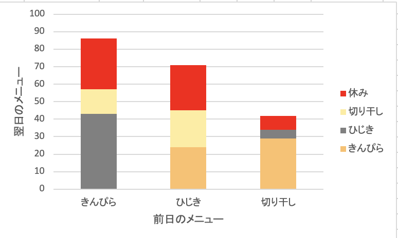

お弁当の秩序と無秩序
概要
京大正門前の弁当屋のメニューに法則はあるのか？ 調べてみた。
はじめに

3年前に今の研究室にやってきてから、平日のお昼ご飯のほとんどは正門前の弁当屋で買っている（図１）。 似たような弁当の屋台は北門のところにもあるが、こっちの方がメニューが豊富で美味しいし、お兄さんの愛想もいいので通うことにした。 ちなみにお値段は550円で、今となっては学食より安い。
ある日弁当を食べながらふと思った。 この弁当のメニューに法則はあるのだろうか。 つまり、前日までの弁当の履歴から翌日の弁当が言い当てられるのか、それともランダムなのか。 この記事では1年間にわたって取ったデータを元に法則を推測し、それを検証する。
推測の戦略
本腰を入れて法則を考える前に、まずは予備的調査で解き方を考えよう。 しばらくデータを取ってみると以下のことがわかった。

- 区画Aのメインのおかずは、毎日変わる上に同じ日でも6通り前後のバリエーションがあるので、網羅的な観測をすることが困難だ。 もし法則があったとしても部分観測のせいで法則を認識することが難しい。 だからこの区画を予測するのは諦めた。
- 区画Bには、丸い餃子を含むセット、ロールキャベツを含むセット、信田巻きを含むセットなどが入る。 これらについても同じ日に複数種類のセットが存在し、日によってセットの内訳も変化するが、同じ日の同じセット内でのバリエーションは無いようだ。 だから特定のセットを毎日選ぶことで問題のサイズを小さくして法則を発見しやすくすることができる。 僕は丸い餃子のセットに注目することにした。 弁当屋のお兄さんは毎日区画Aのメニューを端から順に説明してくれるのだが、僕はそれを聞き流しつつ区画Bに丸い餃子が入っているものを探すのだった。
- 区画Cの小鉢は、日ごとに全メニュー共通であり、日によってきんぴらか切り干し大根かひじきかのようだ。
- 区画Dの漬物は、毎日全メニューで固定であり、大根の赤シソ漬けだけが登場する。
- 米は白米と炊き込みご飯の2種類から選べて、炊き込みご飯の方は豆ご飯と五目ご飯が交互に登場する。 したがって米の予測は容易だ。
というわけで僕の作戦は、「区画Bに丸い餃子が入っている弁当を毎日選びながら、区画BとCのパターンを考える」ことだ。 データの欠損を防ぐため、研究室の皆さんにも協力してもらい、弁当の写真を撮ってSlackの #正門の弁当 チャンネルで共有した。
結果
上記の作戦のもと1年間にわたってデータを取得した。 1年間でいろいろなことがあった。 例えば僕が丸い餃子を毎日選んでいることが店のお兄さんにバレてしまって、お兄さんはメニューの説明を省いて丸い餃子が入っている弁当を自動的に渡してくれるようになった。 餃子入りの弁当が売り切れそうになるとお兄さんがこっそり1食分だけ残しておいて、僕が来た時にしたり顔で奥から出してくれることもしばしばあった。 さらに、日によってはどの弁当の区画Bにも丸い餃子が入っていないことがあるのだが、そういう日に1食分だけ餃子入りのお弁当を作ってくれた時は驚いた。 餃子が好きで選んでいるわけではなく、むしろ特注で作ってもらうと法則が乱れるので僕としては好ましくない。 でも流石に言い出せなかった。 法則を探していることはお兄さんには内緒だ。
また、箸袋が変わったり、弁当の容器が変わったり、値段が変わったり、ご飯大盛りのシステムが変わったりと、お兄さんの盤外戦術に翻弄されることも多かった。 もしかしたら、僕らが区画BとCのパターン認識に熱中することで視野狭窄に陥っているということを教えようとしているのかもしれない。
区画BとCの1年間のデータは次のとおり。

- 区画Bの丸い餃子のセットでは、上側のポテトサラダはほぼ固定で、下側はほうれん草と小松菜といんげんのどれかが出る。これらをB下のおかずと呼ぶことにする。
- B下のおかずはほとんど曜日によって決まる。
- B下のおかずのルールの壊れ方にもルールがある。つまり、曜日のパターンを逸脱するかどうかは祝日の有無でほぼ完全に決まる。
- 祝日がある週でも金曜日がずれることはなく、必ず小松菜が出る。
- 26年4月だけ1週間ではなく2週間を単位とするパターンに挑戦していたみたいだが、逆向きの周期倍分岐が起きて5月からは曜日で決まるようになった。
- 区画Cの方はBと比較すると一見ランダムのようだ。しかしよくみるとそうではない。
- まず、同じメニューが連続して出たことは1度もない。
- 同じメニューが週3回出ることもほとんどない。今までこれが破られたのは7月第5週と10月第5週と2月第3週の3回だけで、いずれもきんぴらが月水金に出た。
- 週3回出ることがないので、必然的に2種類のメニューが週2回、1種類が週1回出ることになる。このうち切り干しが週2回出ることはほとんどない。例外は6月第2週と12月第2週と第4週の3回だけ。
- 切り干しの翌日にはきんぴらが出ることが多い(図3)。
- 金曜日と翌営業日の区画Cは異なることが多い。 金曜とその翌営業日が両方観測できたのは今まで39回で、そのうち33回は異なるメニューが出た。
- まとめると、区画Cにも弱い法則があり、それは区画Bの法則とは独立している。僕は初め二つが同じ法則で共起するか、そうでなければランダムに出るのが自然だと予想していたので、二つの独立したルールがあることを知って意外に思った。

実証
上記の法則を検証するために、3月23日から始まる１週間のメニューを予想してみよう。
記事一覧に戻る